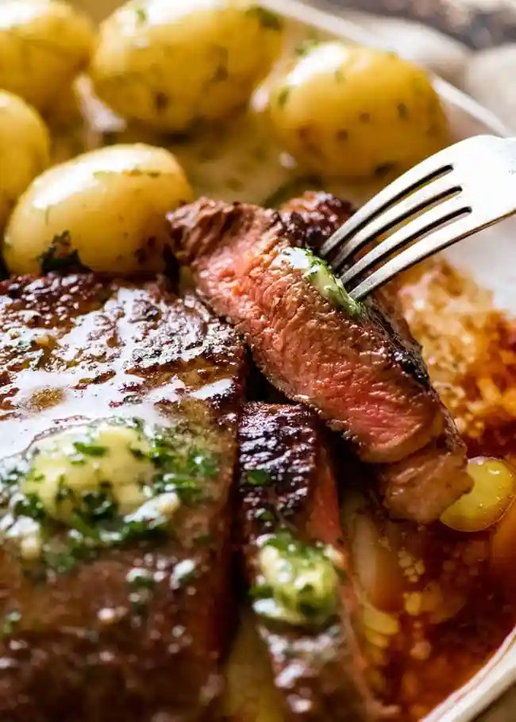

Easy Steak Marinade

Description
Ingredients
- 1/4 cup olive oil
- 2 tablespoons worcestershire sauce
- 1/4 cup balsamic vinegar
- 1/4 cup low sodium soy sauce
- 1 tablespoon minced garlic
- salt and pepper to taste
Instructions
- Whisk the ingredients together in a small bowl.
-
Place steak in a large zip top bag or a bowl along with the marinade and
seal the bag/bowl
-
Let marinate in the fridge for at least 30 minutes. *4 hours is ideal
*The longer the steaks marinate, the more flavor they will have!
**Sear steak in pan with butter then bake in oven at 400 degrees until
internal temperature is 130-140 degrees(medium rare) then let rest for 5 minutes